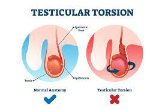

Testicular torsion.

SYMPTOMS:
The onset of pain may be quite sudden, and the pain can be severe. Swelling may be limited to just one side, or it can occur in the entire scrotum. You may notice that one testicle is higher than the other.
- dizziness
-
nausea
-
vomiting
-
lumps in the scrotal sac
-
blood in the semen
CAUSES
- Torsion is not a common problem. It happens in about 1 in 4,000 males under the age of 25. It can also happen in newborns and in older men.
-
In most males, a testicle can't twist because the tissue around it is well attached. Some males are born with no tissue holding the testes to the scrotum. This lets the testes "swing" inside the scrotum (often called a "bell clapper" deformity).
-
Torsion can happen on either side, but rarely on both sides. Physical activity doesn't cause torsion. It may happen during exercise, sitting, standing or even sleeping.
DIAGNOSIS
Tests that can be used to diagnose torsion include:
- urine tests, which look for infection
physical exams
-
imaging of the scrotum
During a physical exam, your doctor will check your scrotum for swelling. They may also pinch the inside of your thigh. Normally this causes the testicles to contract. However, this reflex may disappear if you have torsion.
You might also receive an ultrasound of your scrotum. This shows blood flow to the testicles. If blood flow is lower than normal, you may be experiencing torsion.